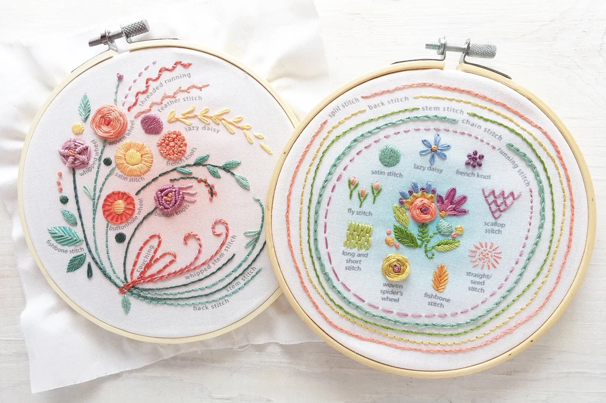
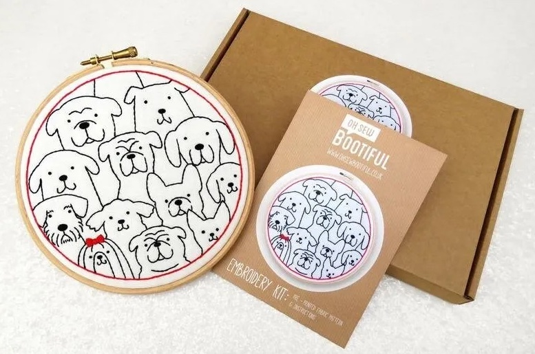
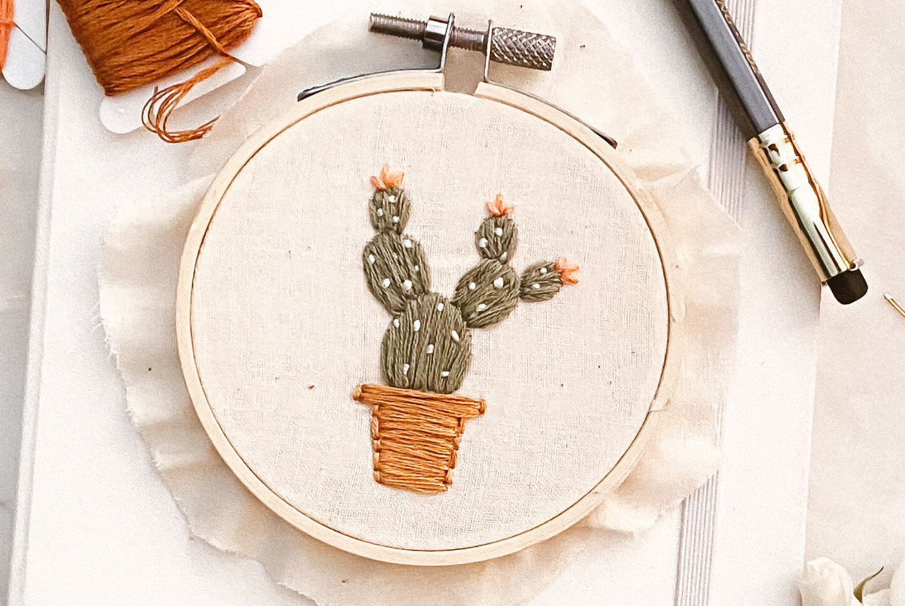
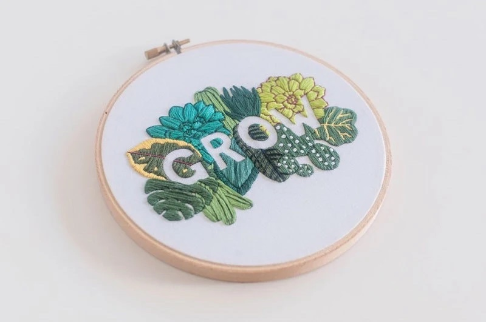
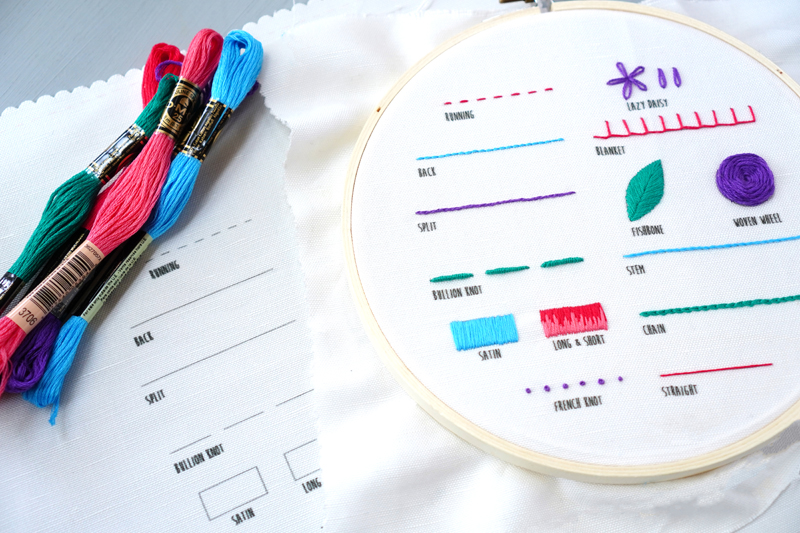
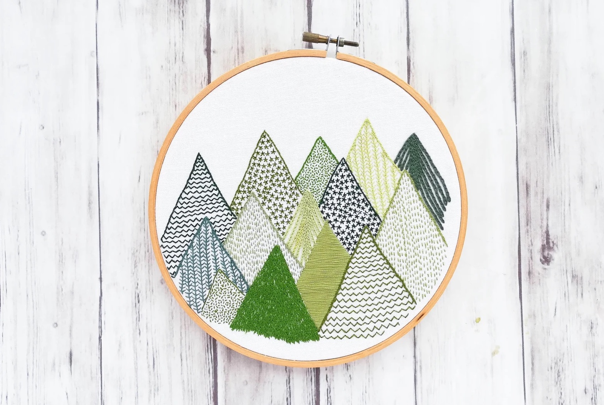
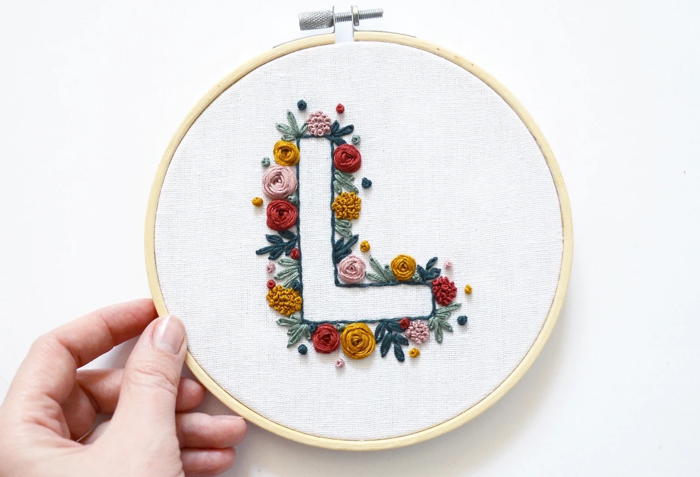
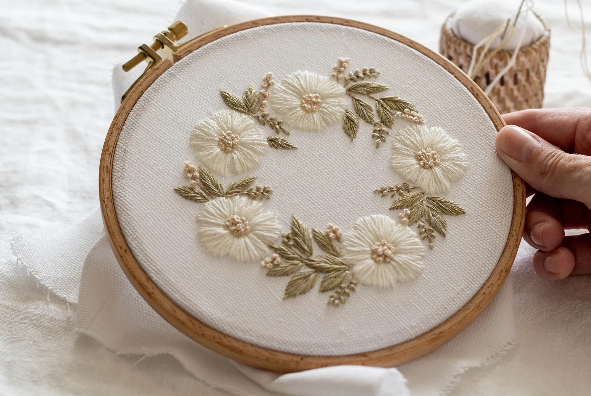

Etsy Stitch Sampler Beginner Kit by Little Dear

OhSewBootiful Dogs Embroidery Kit

Simple Cactus Embroidery Pattern by Chloe Wen

Lettering Embroidery Kit by BrynnandCo

Essential Stitches Embroidery Kit by Cutesy Crafts

Evergreen Trees Embroidery Kit by A Lively Hope

Letter Embroidery Pattern for Beginners by BeHoop

Flower Embroidery Pattern by WhyNotStitching